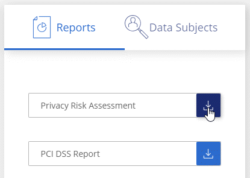
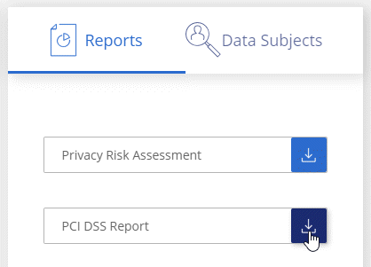
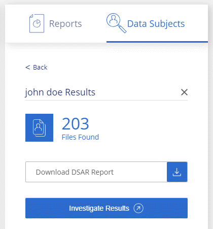

Notes de mise à jour
Notes de mise à jour
Afficher les rapports de conformité
 Suggérer des modifications
Suggérer des modifications
La classification BlueXP fournit des rapports qui vous permettent de mieux comprendre l'état du programme de confidentialité des données de votre entreprise.
Par défaut, les tableaux de bord de classification BlueXP affichent les données de conformité et de gouvernance pour tous les environnements de travail, bases de données et sources de données. Si vous souhaitez afficher des rapports contenant des données pour certains environnements de travail uniquement, sélectionnez ces environnements de travail.

|
|
Rapport d'évaluation des risques pour la confidentialité
Le rapport d'évaluation des risques pour la confidentialité fournit une vue d'ensemble de l'état des risques pour la confidentialité de votre entreprise, conformément aux réglementations en matière de confidentialité, telles que le Règlement général de l'Union européenne sur la protection des données et la loi CCPA. Le rapport contient les informations suivantes :
- Statut de conformité
-
A indice de gravité et la distribution des données, qu'elles soient non sensibles, personnelles ou sensibles.
- Présentation de l'évaluation
-
Une ventilation des types de données personnelles ainsi que des catégories de données.
- Sujets de données dans cette évaluation
-
Nombre de personnes, par lieu, pour lesquelles des identificateurs nationaux ont été trouvés.
Générez le rapport d'évaluation des risques en matière de confidentialité
Accédez à l'onglet conformité pour générer le rapport.
-
Dans le menu BlueXP, cliquez sur gouvernance > Classification.
-
Cliquez sur conformité, puis cliquez sur l'icône de téléchargement en regard de évaluation des risques de confidentialité sous Rapports.

La classification BlueXP génère un rapport PDF que vous pouvez examiner et envoyer à d'autres groupes selon les besoins.
Indice de gravité
La classification BlueXP calcule l'indice de gravité du rapport d'évaluation des risques en matière de confidentialité sur la base de trois variables :
-
Pourcentage de données personnelles sur toutes les données.
-
Le pourcentage de données personnelles sensibles hors de toutes les données.
-
Le pourcentage de fichiers qui incluent des sujets de données, déterminé par des identificateurs nationaux tels que les ID nationaux, les numéros de sécurité sociale et les numéros d'identification fiscale.
La logique utilisée pour déterminer le score est la suivante :
| Indice de gravité | Logique |
|---|---|
0 |
Les trois variables sont exactement 0 % |
1 |
L'une des variables est supérieure à 0 % |
2 |
L'une des variables est supérieure à 3 % |
3 |
Deux des variables sont supérieures à 3 % |
4 |
Trois des variables sont supérieures à 3 % |
5 |
L'une des variables est supérieure à 6 % |
6 |
Deux des variables sont supérieures à 6 % |
7 |
Trois des variables sont supérieures à 6 % |
8 |
L'une des variables est supérieure à 15 % |
9 |
Deux des variables sont supérieures à 15 % |
10 |
Trois des variables sont supérieures à 15 % |
Rapport PCI DSS
Le rapport PCI DSS (Payment Card Industry Data Security Standard) peut vous aider à identifier la distribution des informations de carte de crédit dans vos dossiers. Le rapport contient les informations suivantes :
- Présentation
-
Combien de fichiers contiennent des informations de carte de crédit et dans quels environnements de travail.
- Le cryptage
-
Le pourcentage de fichiers contenant des informations de carte de crédit sur des environnements de travail cryptés ou non cryptés. Ces informations sont spécifiques à Cloud Volumes ONTAP.
- Protection contre les ransomwares
-
Le pourcentage de fichiers contenant des informations de carte de crédit sur des environnements de travail où la protection par ransomware est activée ou non. Ces informations sont spécifiques à Cloud Volumes ONTAP.
- La conservation
-
Délai de la dernière modification des fichiers. Ceci est utile car vous ne devez pas conserver les informations de carte de crédit plus longtemps que vous n'avez besoin de les traiter.
- Distribution des informations de carte de crédit
-
Les environnements de travail où les informations de carte de crédit ont été trouvées et où le chiffrement et la protection contre les ransomwares sont activés.
Générez le rapport PCI DSS
Accédez à l'onglet conformité pour générer le rapport.
-
Dans le menu BlueXP, cliquez sur gouvernance > Classification.
-
Cliquez sur Compliance, puis sur l'icône de téléchargement en regard de PCI DSS Report sous Reports.

La classification BlueXP génère un rapport PDF que vous pouvez examiner et envoyer à d'autres groupes selon les besoins.
Rapport HIPAA
Le rapport HIPAA (Health Insurance Portability and Accountability Act) peut vous aider à identifier les fichiers contenant des informations sur la santé. Il est conçu pour aider votre organisation à respecter les lois HIPAA en matière de confidentialité des données. Voici les informations que recherche la classification BlueXP :
-
Modèle de référence de santé
-
Code médical ICD-10-cm
-
Code médical ICD-9-cm
-
RH - Catégorie Santé
-
Catégorie données d'application de santé
Le rapport contient les informations suivantes :
- Présentation
-
Combien de fichiers contiennent des informations sur l'état de santé et dans quels environnements de travail.
- Le cryptage
-
Le pourcentage de fichiers contenant des informations de santé sur des environnements de travail chiffrés ou non cryptés. Ces informations sont spécifiques à Cloud Volumes ONTAP.
- Protection contre les ransomwares
-
Le pourcentage de fichiers contenant des informations d'état sur des environnements de travail qui n'ont pas ou qui sont sur lesquels une protection par ransomware est activée. Ces informations sont spécifiques à Cloud Volumes ONTAP.
- La conservation
-
Délai de la dernière modification des fichiers. Ceci est utile parce que vous ne devez pas conserver les renseignements sur la santé plus longtemps que vous n'avez besoin de les traiter.
- Distribution des renseignements sur la santé
-
Les environnements de travail dans lesquels les informations de santé ont été trouvées et si le chiffrement et la protection par ransomware sont activés.
Générez le rapport HIPAA
Accédez à l'onglet conformité pour générer le rapport.
-
Dans le menu BlueXP, cliquez sur gouvernance > Classification.
-
Cliquez sur conformité, puis cliquez sur l'icône de téléchargement en regard de Rapport HIPAA sous Rapports.
La classification BlueXP génère un rapport PDF que vous pouvez examiner et envoyer à d'autres groupes selon les besoins.
Qu'est-ce qu'une demande d'accès aux données ?
Les réglementations en matière de confidentialité, telles que le RGPD européen, accordent à des sujets de données (clients ou employés, par exemple) le droit d'accéder à leurs données personnelles. Lorsqu'un sujet de données demande cette information, elle est appelée DSAR (Data Subject Access request). Les organisations sont tenues de répondre à ces demandes "sans délai excessif" et au plus tard dans un mois suivant la réception.
Vous pouvez répondre à un DSAR en recherchant le nom complet ou l'identifiant connu d'un sujet (par exemple une adresse e-mail), puis en téléchargeant un rapport. Ce rapport est conçu pour aider votre entreprise à respecter le RGPD ou les autres lois similaires sur la confidentialité des données.
Comment la classification BlueXP peut-elle vous aider à répondre à un DSAR ?
Lorsque vous effectuez une recherche relative à une personne concernée, le système de classification BlueXP trouve tous les fichiers, compartiments, OneDrive et comptes SharePoint contenant le nom ou l'identifiant de cette personne. La classification BlueXP vérifie le nom ou l'identifiant des données pré-indexées les plus récentes. Il ne lance pas de nouvelle acquisition.
Une fois la recherche terminée, vous pouvez télécharger la liste des fichiers d'un rapport de demande d'accès aux données. Le rapport rassemble les informations issues des données et les place en termes juridiques que vous pouvez renvoyer à la personne.
|
|
La recherche de sujet de données n'est pas prise en charge actuellement dans les bases de données. |
Rechercher des sujets de données et télécharger des rapports
Recherchez le nom complet ou l'identifiant connu du sujet de données, puis téléchargez un rapport de liste de fichiers ou un rapport DSAR. Vous pouvez effectuer une recherche par "tout type d'informations personnelles".
|
|
L'anglais, l'allemand, le japonais et l'espagnol sont pris en charge lors de la recherche des noms des sujets de données. La prise en charge d'autres langues sera ajoutée ultérieurement. |
-
Dans le menu BlueXP, cliquez sur gouvernance > Classification.
-
Cliquez sur sujets de données.
-
Recherchez le nom complet ou l'identifiant connu du sujet de données.
Voici un exemple qui montre une recherche du nom john Doe:

-
Choisissez l'une des options disponibles :
-
Télécharger le rapport DSAR : réponse officielle à la demande d'accès que vous pouvez envoyer au sujet des données. Ce rapport contient des informations générées automatiquement en fonction des données classées par BlueXP situées sur l'objet des données et qui sont conçues pour être utilisées comme modèle. Vous devez remplir le formulaire et le revoir en interne avant de l'envoyer au sujet des données.
-
Étudier les résultats : une page qui vous permet d'examiner les données en recherchant, en triant, en développant les détails d'un fichier spécifique et en téléchargeant la liste de fichiers.
S'il y a plus de 10,000 résultats, seuls les 10,000 premiers apparaissent dans la liste de fichiers.
-
Sélectionnez les environnements de travail pour les rapports
Vous pouvez filtrer le contenu du tableau de bord BlueXP Classification Compliance pour afficher les données de conformité pour tous les environnements de travail et bases de données, ou pour seulement des environnements de travail spécifiques.
Lorsque vous filtrez le tableau de bord, la classification BlueXP évalue les données et les rapports de conformité pour les environnements de travail que vous avez sélectionnés.
-
Cliquez sur la liste déroulante du filtre, sélectionnez les environnements de travail pour lesquels vous souhaitez afficher les données, puis cliquez sur Afficher.